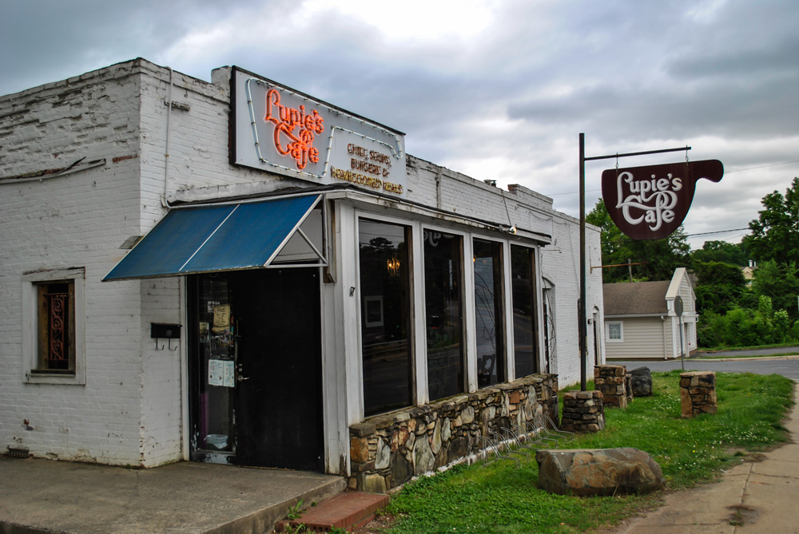
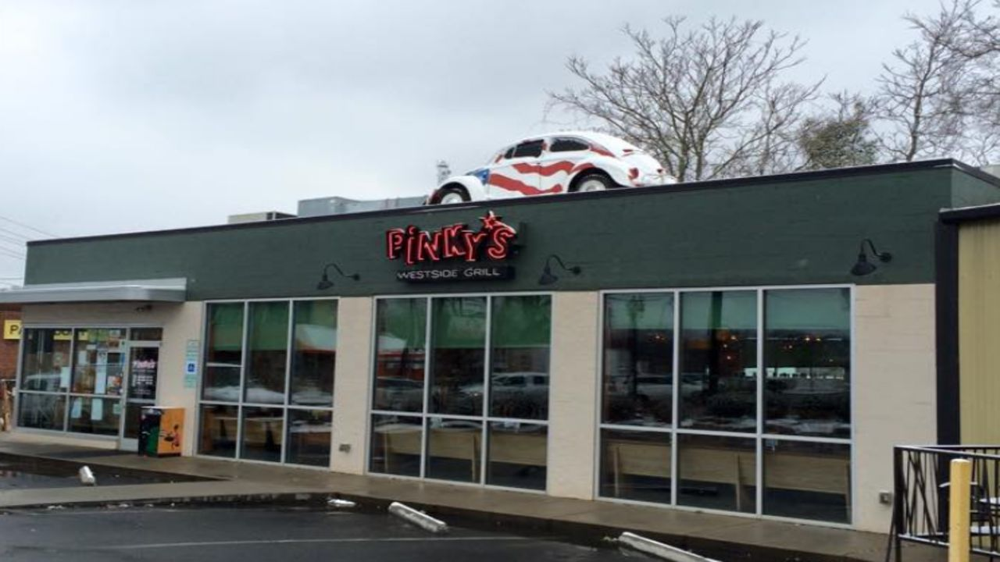
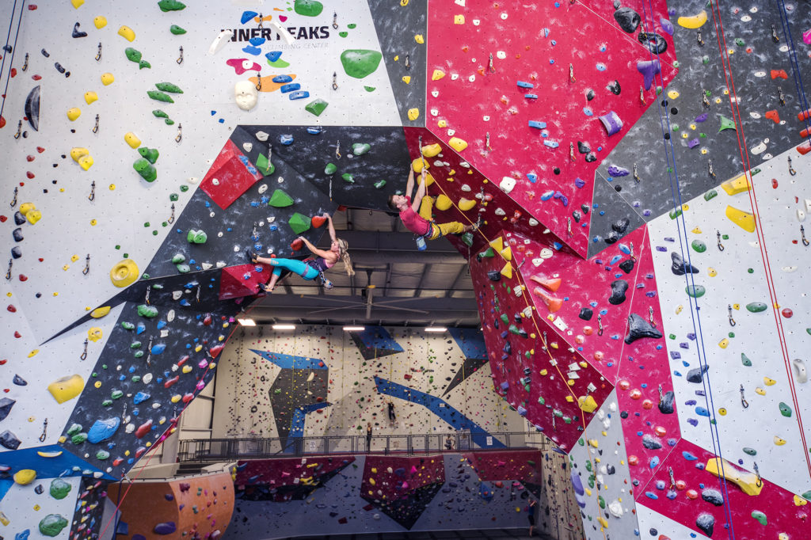

Company Spotlight
Lupie's Cafe
Down-home kitchen serving up old-school comfort eats such as meatloaf & chicken 'n' dumplings.
Find them at: 2718 Monroe Rd, Charlotte, NC 28205
Phone Number: (704) 374-1232
Please visit the Lupies Facebook page to learn more!
Pinky's Westside Grill
Local American chain serving sandwiches, hot dogs, tacos & cocktails in a casual, offbeat space.
Find them at: 1600 W Morehead St, Charlotte, NC 28208
Phone Number: (704) 332-0402
Please visit eatatpinkys.com to learn more!
Inner Peaks
Inner Peaks provides an environment that can help you stay fit, reduce stress, build focus, meet people and just have a great time.
Find them at: 2220 S Tryon St, Charlotte, NC 28203
Phone Number: (980) 242-3244
Please visit innerpeaks.com to learn more!
Want to take part?
Join us!Upcoming Events
Member Orientation
Jan 6th, 2022
8:30 AM - 10:00 AM
Member Orientation - This event is for all members who want more information about their Charlotte Area Chamber membership. Come have your questions answered from engagement to technology.
Coffee with the Chamber - SouthPark
Jan 25th, 2022
8:30 AM - 9:30 AM
Join us for Coffee with the Chamber, an hour of informal networking with other Charlotte Area Chamber members and guests. Join us for coffee at Reid's SouthPark and make some new connections!
Our Mission
The Charlotte Area Chamber believes a strong, vital community goes hand-in-hand with a strong, vital business environment. By offering a variety of outstanding business programs, the Charlotte Area Chamber is dedicated to providing something for everyone.